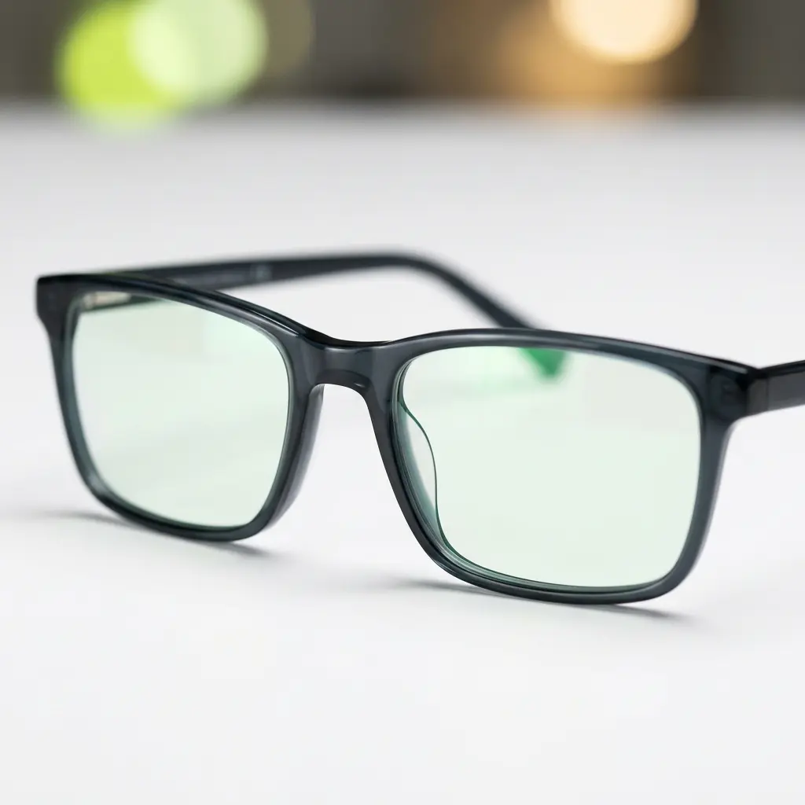
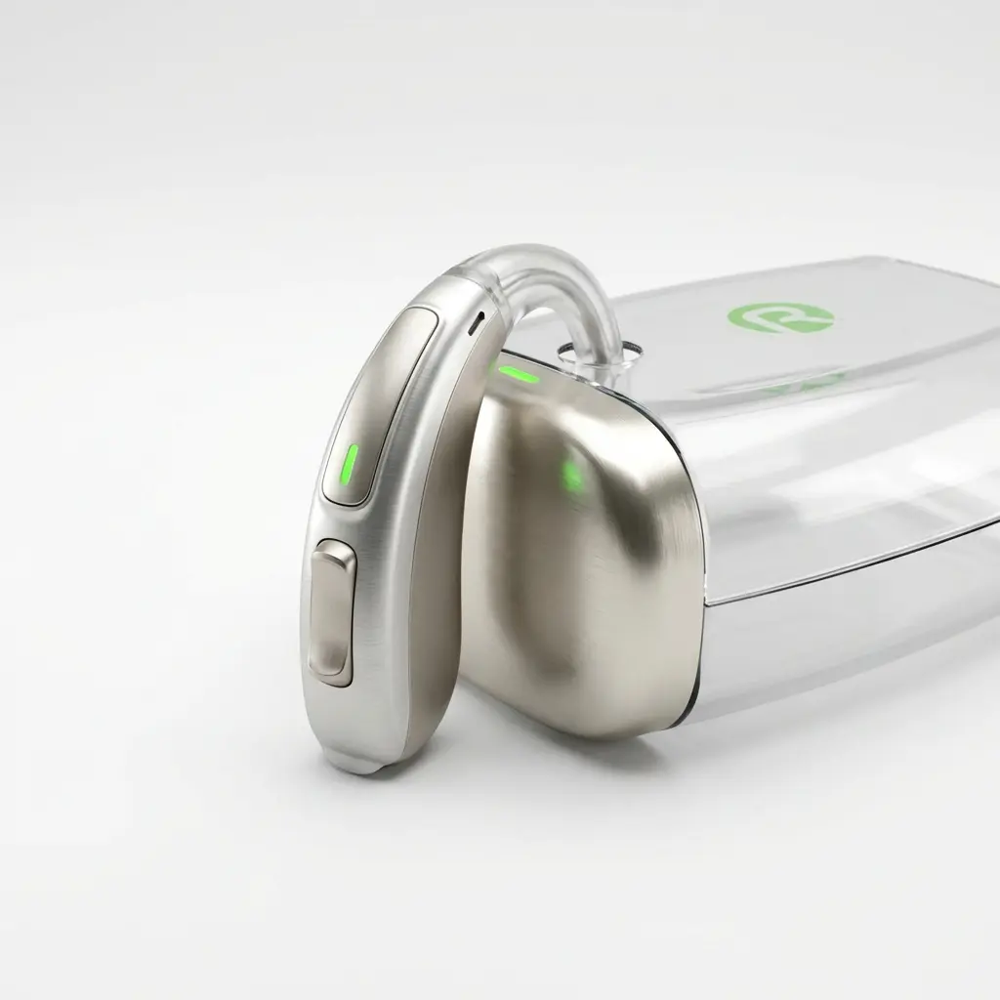

Lentes oftálmicas personalizadas
Lentes adaptadas a ti con Hoya, Essilor, Indo, Zeiss y Rodenstock. Especialistas en progresivos con medición facial 3D (VisiOffice X).
- Varilux XR-PRO con IA
- Progresivos personalizados
- Análisis facial 3D
Todo Óptica
Servicios clínicos
Lentes personalizadas, control de miopía, lentillas y audiología con tecnología precisa y seguimiento para resultados consistentes.
Nuestros servicios
Desde lentes personalizadas hasta audiología. Si no sabes cuál es tu caso, reserva una cita y lo valoramos en consulta.

Lentes adaptadas a ti con Hoya, Essilor, Indo, Zeiss y Rodenstock. Especialistas en progresivos con medición facial 3D (VisiOffice X).

Protocolos clínicos para frenar la progresión en niños y jóvenes, con seguimiento especializado.
Adaptaciones personalizadas y manejo integral del ojo seco para maximizar confort y visión. Lentillas Precision7 con tecnología ACTIV-FLO®.

Exámenes completos con tecnología avanzada para detectar problemas a tiempo.

Solución especializada para queratocono y córneas irregulares con seguimiento dedicado.

Centro auditivo con pruebas diagnósticas, adaptación y mantenimiento de audífonos.
Contacto directo
Llamada o WhatsApp directo por centro. Te orientamos al servicio adecuado.
Paseo de Zorrilla 62 · Valladolid
C/ Labradores 22 · Valladolid
Avda. Donostiarra 24 · Madrid
Laboratorio interactivo
Calibra cada lente, supera el umbral de claridad y desbloquea las tres escenas del laboratorio.
Reserva una cita y cuéntanos tu caso: te proponemos una solución clara y un plan de seguimiento.
Pedir cita